Beyond the Marketplace
Helping people see Karrot as more than a marketplace.
Make people see Karrot as a local super app, not just a second-hand marketplace.
As of 2022, most people used Karrot for one thing: second-hand trading. Getting to anything else was hard, and people who did find another service often couldn’t find it again. This page covers three pieces of work: a task force that rethought the whole app, a year of home feed experiments that made other services feel native, and the redesign of My Karrot and All Services that I led.
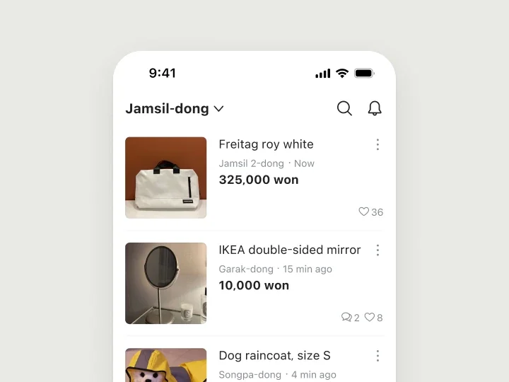
I analysed the app’s structure and flows, and defined problems and proposals for Home, Neighborhood Life and My Karrot.
Proposals for Home, Search and All Services were all built.
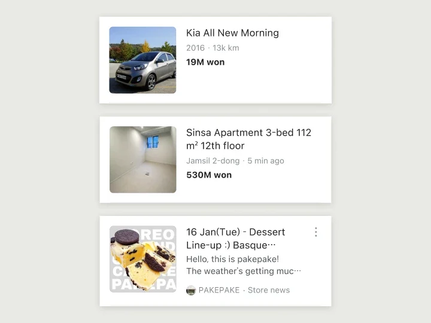
As the feed’s only designer, I changed how used cars, property and store news appear, so they read like the listings people came for.
Used-car clicks +23.3% and store news conversion +7%, against control.
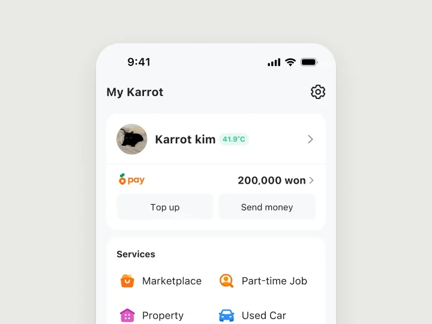
I set the direction, planned and ran the experiments, and took part in every decision from start to finish.
My Karrot page views +50.4%. Karrot Pay sign-ups +253%.
Step back and look at the whole app
Goal: look at Karrot as a whole forest, not tree by tree, and propose UX and UI that make it feel like a local super app.
Four product designers, a user researcher, a PM, the CPO and the CEO. I analysed the app’s overall structure and flows, and defined problems and proposals for Home, Neighborhood Life and My Karrot.
The problem
As of 2022, most people saw Karrot, and used it, as a place to trade second-hand goods. The main reason: finding and getting to anything else wasn’t easy. Even when people found another service, they often couldn’t find it again, and gradually dropped off.
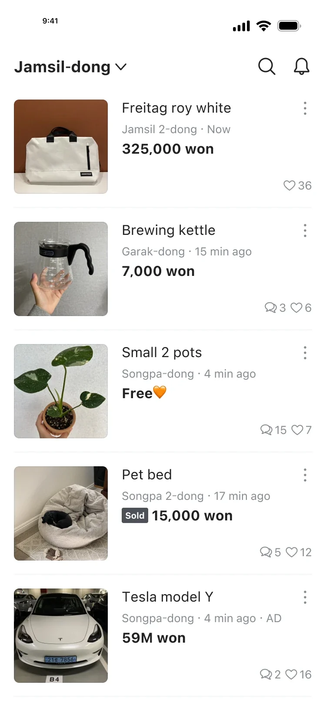
Home. Almost all second-hand listings.
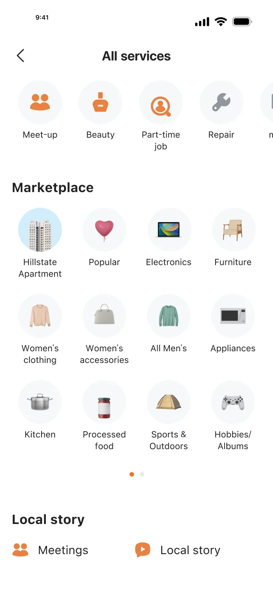
All Services. Built around second-hand categories.
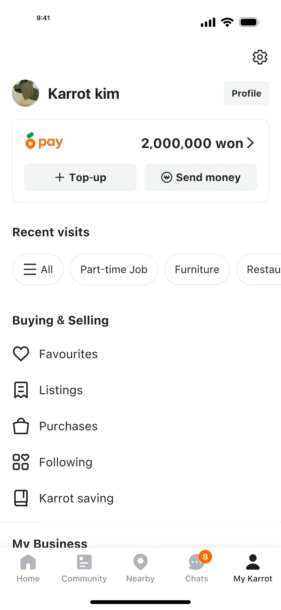
My Karrot. Mostly a record of buying and selling.
Karrot in 2022.
1. Research the app’s structure the way people see it
Through user research and an analysis of the app’s information architecture, we regrouped every service by how people actually perceive it, not by how Karrot had organised it.
2. Redefine each tab’s role around how people see it
3. Test with users, and align with the company
People didn’t notice big changes to the tab structure, and kept using the app the way they knew. To reach a service, they used entry points or search that took them there straight from the content in front of them.
Karrot’s identity isn’t a utility app. It’s about discovering what’s happening in the neighbourhood. So the home screen itself had to work as a feed.
Let people find other services inside the content they already came for
Within second-hand trading, let people discover other services naturally and seamlessly. Let them explore through content, not through a hierarchy of services.
Solution 1. Home. A personalised feed of all kinds of local content, built on second-hand listings, rather than a separate tab for second-hand. People could discover other content they might like between second-hand posts. Making that other content feel at home in the feed became Part 2.
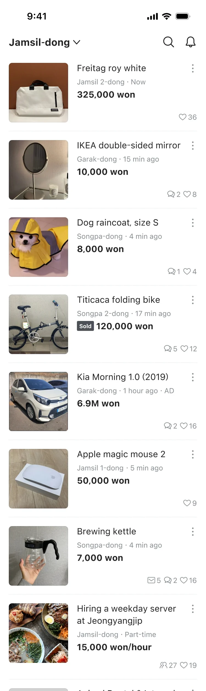
Until 2022. The same mix for everyone: 88% second-hand content from random categories, with little personalisation.
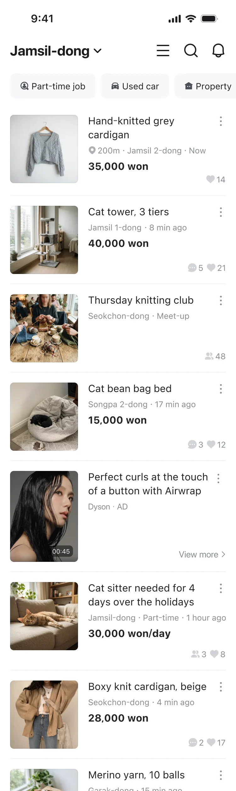
2024, example A. Mid-20s, has a cat, into knitting. Cat gear and knitwear, with a knitting meet-up, a cat-sitting job and a video ad in between.
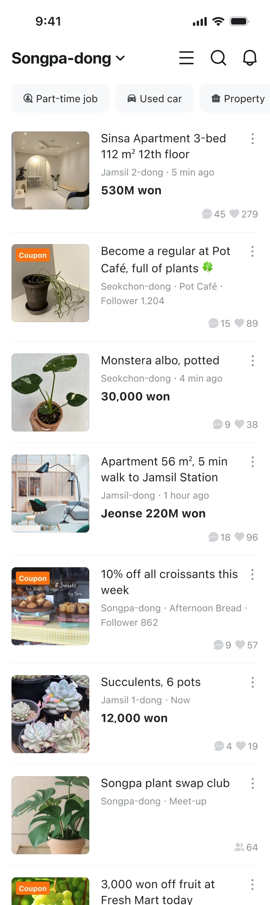
2024, example B. Late 40s, into property, plants and nearby store deals. Apartments and plants, with coupons from local stores and a plant-swap meet-up.
In 2024, service shortcuts sat at the top and the feed was personalised: 70% second-hand content, mixed with used cars, video ads, meet-ups, property, part-time jobs and local stores. The personas and listings shown are illustrative.
Solution 2. Fixed entry points. Give every service a fixed entry point people can always reach, designed so it makes sense in a content-driven app.
Solution 3. Search as a way in. Most people who couldn’t find a service’s entry point were reaching service homes, like Jobs and Real Estate, through search. So we proposed helping people discover and understand services through content before, during and after a search.
Outcome
The proposals for Home, Search and All Services, the key surfaces for being seen as a local super app, were all built into the product.
The task force didn’t reach solutions for My Karrot, the notification box or profiles, but I raised them as problems and they stayed on the list. After the task force ended, I took on a dual role and led the reorganisation myself. That’s Part 3.
Make other services feel at home in the feed
Goal: help people who come to trade second-hand notice, and open, the other services in their feed, without it feeling like ads.
As Karrot grew, the feed began to carry used cars, property and store products, plus article-style posts like store news, reviews and meet-ups. People read anything that didn’t look like a second-hand listing as an ad, and scrolled past it.
Their picture of a feed item was the second-hand listing: a short product name, the neighbourhood and time, then a price. Anything formatted differently stood out, in the wrong way.
Approach
Keep the listing structure people already trust, and fit each service’s information into it. People who came to trade could then find other services on their own, without being pushed. Every change went through an A/B test.
Used cars
Hypothesis. Showing car details the way people scan listings will raise clicks.
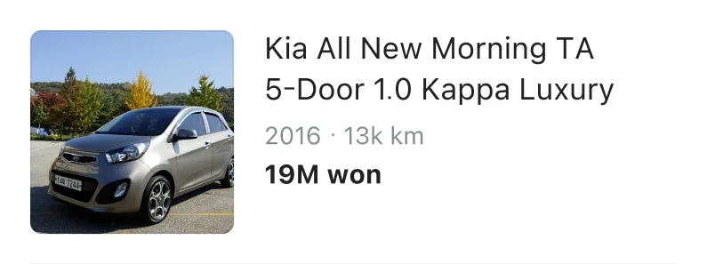
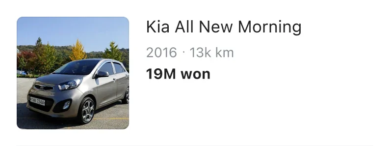
| Against control | Treatment 1 | Treatment 2 |
|---|---|---|
| Clicks | −2.2% | +23.3% |
| Saves | +2.5% | +17.9% |
| Chats started | −1.1% | +13.6% |
| Listing views | −0.8% | +10.8% |
| Visits to the used-car home | +0.6% | +18.5% |
| Home feed ad revenue | No change | No change |
People scan the feed fast and need to spot the word they care about in a split second. The shortest title won by a wide margin. The most detailed one lost clicks.
Property
Hypothesis. Showing property details the way people scan listings will raise clicks.
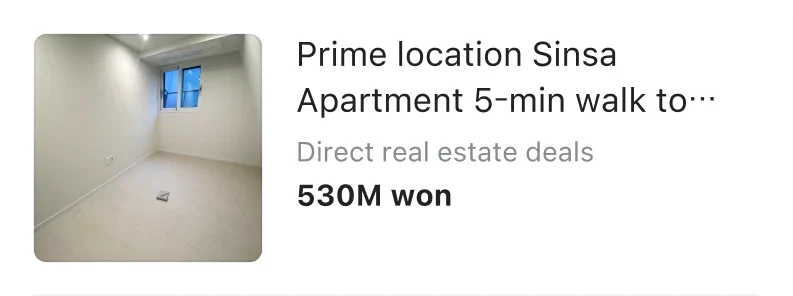
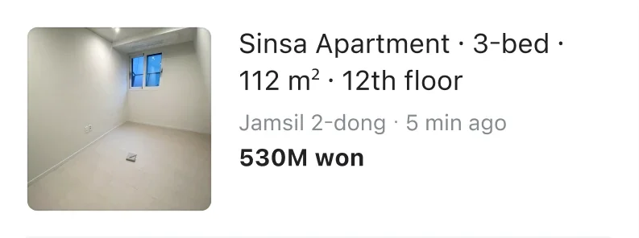
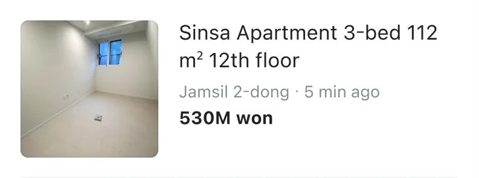
| Against control | Treatment 1 | Treatment 2 |
|---|---|---|
| Clicks | −0.9% | +5.9% |
| Saves | +6.9% | +11.8% |
| Chats started | −1.1% | +1.7% |
| Listing views | No change | +3.3% |
| Visits to the property home | +2.5% | +6.7% |
| Home feed ad revenue | No change | +0.4% |
A second-hand title is just a product name. Dividers made the title look formatted, and formatted read as commercial, so Treatment 1 lost clicks. The same words without dividers won.
Store news, in three rounds
The feed card was built for products: a short title and a price, opening a product page. Store news is a longer post by a shop owner, and it opens an article. In two lines, people couldn’t tell who posted it, what it was about, or where it led.
Hypothesis. Making store news read like an article, not a product, will raise conversion.
Title, then the store name and “Store news”.
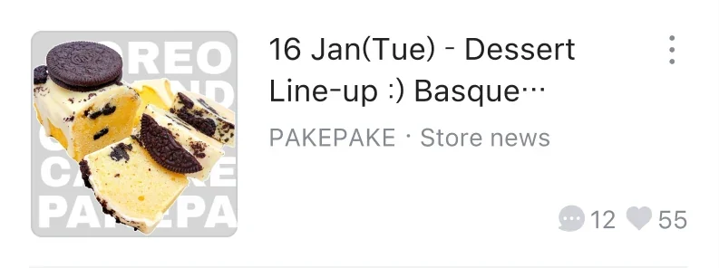
Conversion (saves, follows and chats) rose slightly, but clicks and some guardrail metrics fell.
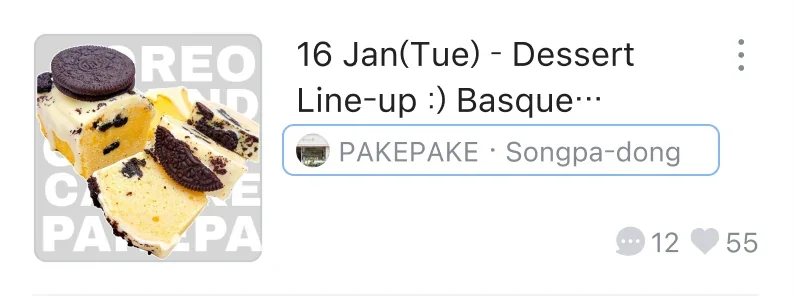
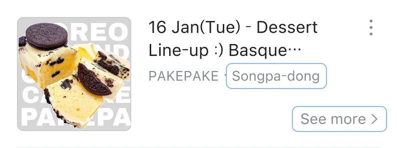
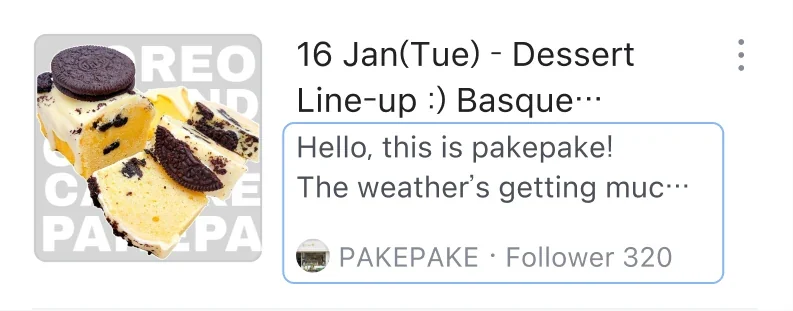
Showing the post’s text cut clicks sharply. The follower count cut clicks too, but lifted conversion by over 10%.
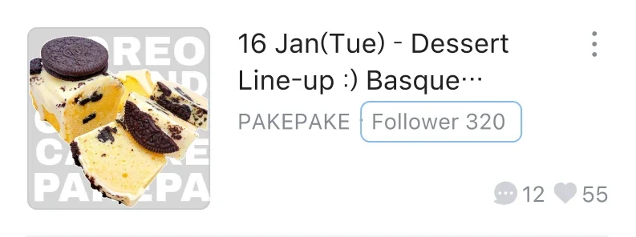
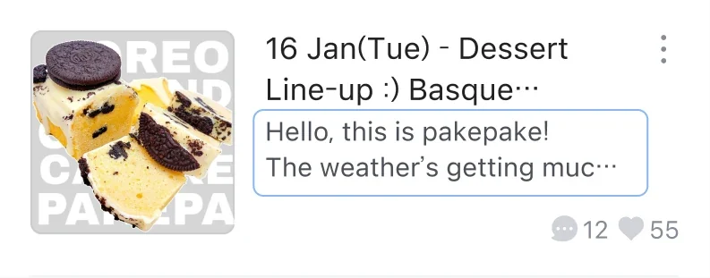
Neighbourhood first, the way listings show it. T1 kept impressions and clicks flat, lifted conversion about 7%, and cut ad misclicks (people leaving within 5 seconds) by 1%.
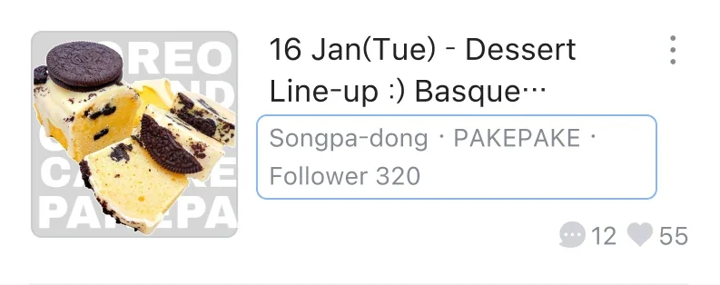
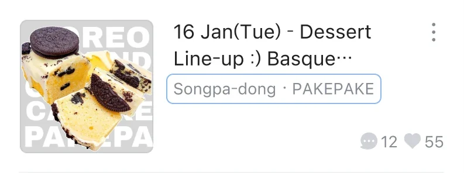
In research, people decided whether something was an ad by who posted it, so posts by shop owners looked promotional even when they weren’t. The answer was balance: enough to show what the post is, not so much that it reads like an ad.
Results
Each number is the lift over that test’s control group, which kept the original card.
None of these tests added a new entry point. Each one made a service’s content easier to read in the feed, and more people went on into that service.
Make My Karrot the way into every service
Goal: help people learn fixed entry points to every service, and visit My Karrot to reach them. Reorganise the menus across all services.
Background
My Karrot. CTR by section: most taps went to buying and selling.
All Services. Second-hand categories took most of the page.
Becoming a local super app meant reworking the whole journey, not just the home feed. We redesigned the structure of My Karrot as the core touchpoint.
Two experiments on the name
To widen its role beyond trading history, we made the tab the main way into every service, and called it All. Page views dropped 6%, and feedback said many people couldn’t find My Karrot anymore. Interviews showed why: people expected a tab called All to be a sitemap, not a place for their own activity. Those who got used to the name, though, found it natural for the old My Karrot menus to live there. After two weeks, we concluded people couldn’t adapt to a new name that quickly.
−6% tab page views
The third tab affects how the whole app gets used, so we made tab page views a guardrail and ran a second experiment, keeping the original name, My Karrot. This time page views held, and we decided to roll it out.
No drop in page views. Rolled out.
Control. The original tab.
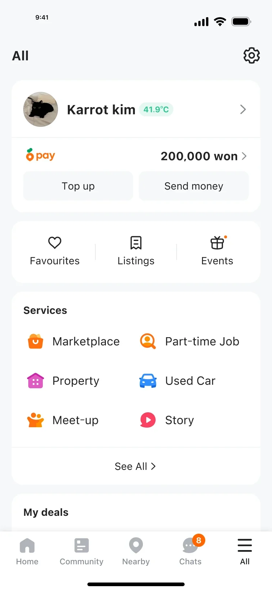
Experiment 1. Renamed All, with services in cards.

Experiment 2. Shipped The same cards, under the name My Karrot.
Group by what people do, and make services stand out
Features with very different purposes share one surface, so clear grouping matters. Cards make each section’s boundary easy to see at a glance.
Service entry points get more visual weight, with colour icons and a larger share of the screen.
Instead of mirroring the internal org structure, every menu was regrouped from the user’s point of view.
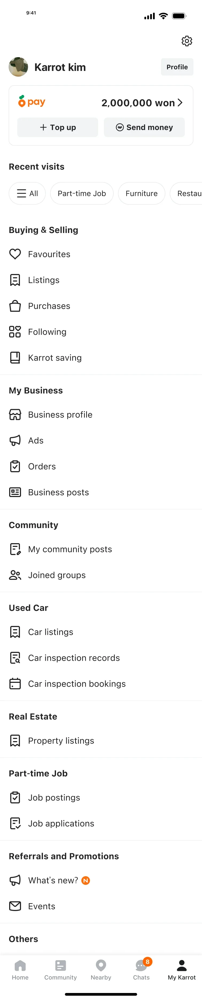
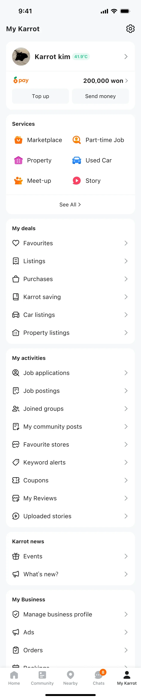
CTR by section, before and after the redesign.
Service discovery across the app
Every service now has fixed ways in: the menu on Home opens All Services, and My Karrot shows the main services with a See All link to the rest.
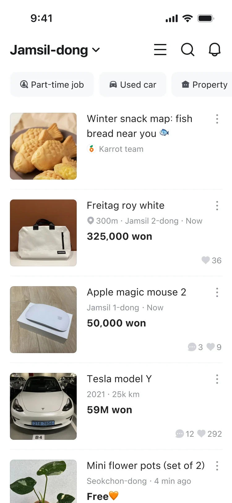
Home. The menu icon opens All Services.
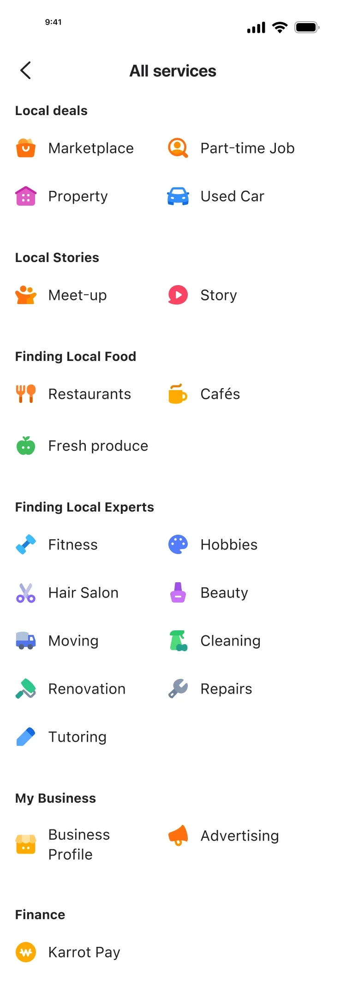
All Services. Every service, grouped by what people want to do.
My Karrot. The main services, with See All for the rest.
All Services
The second-hand categories had been surfaced in a way that didn’t match the service hierarchy. We moved Marketplace into the first level, next to the other services, to set a clearer hierarchy. Its categories now sit one tap deeper.
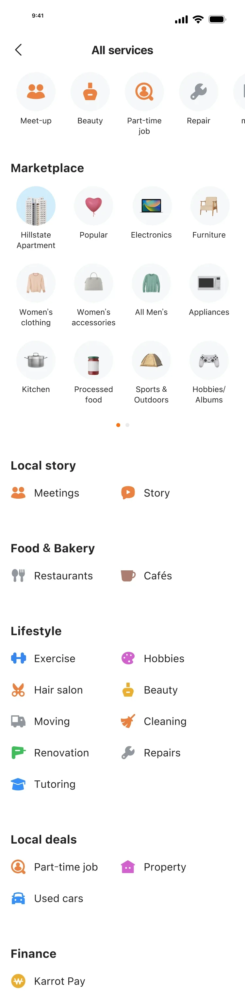
Before. Marketplace categories filled most of the page.
After. Marketplace sits with the other services.
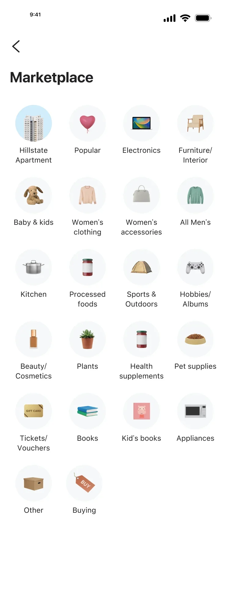
One tap deeper. The full set of second-hand categories.
Results
After the redesign, people learned to reach a wider range of services through My Karrot. Page views and visitors across service entry points kept growing, and My Karrot became an effective surface for marketing and growth work.
Did people’s view of Karrot change?
Karrot tracked this with user surveys, run yearly inside the home feed since 2024, alongside the feed’s own metrics. These are company-wide numbers, shaped by many teams, including the ML work that personalised the feed. They’re the outcome my work fed into, not mine alone.
In two years, the share of people who came only to trade fell by more than two-thirds.
73.5% satisfied with the home feed, 21.9% neutral, 4.6% dissatisfied.
The home feed in 2024
Trading is still why most people open Karrot. But far fewer come only for that, more of the feed’s clicks go to other services, and satisfaction stayed high as the feed mixed them in.
What I learned
Testing showed people didn’t notice a new tab structure. They reached services through entry points and search in the content in front of them.
People scan for one word in a split second. The shortest used-car title won 23.3% more clicks, and the most detailed one lost clicks.
Store news looked promotional even when it wasn’t. Putting the neighbourhood first, the way listings do, lifted conversion 7% and cut ad misclicks.
Renaming My Karrot cost 6% of its page views in two weeks. The guardrail in the second test let us keep the gains without that cost.
Regrouping menus by what people do, rather than which team owns them, is what made the services easy to find.
My Karrot was left open when the task force ended. Keeping it on the list is what made Part 3 possible.